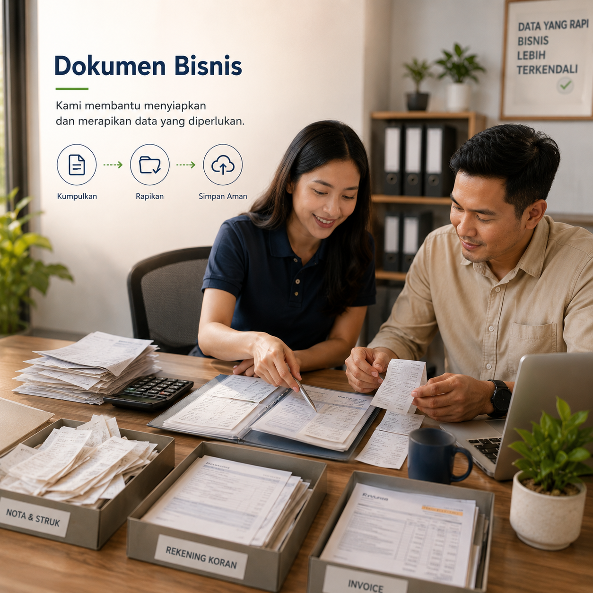

Bangun fondasi keuangan bisnis bersama ekosistem yang mendampingi.
Akuntara membantu UMKM bergerak dari pencatatan yang tersebar menuju proses keuangan yang lebih tertib, melalui teknologi, talenta akuntansi, reviewer, supervisor, dan quality control.
Ketika bisnis bertumbuh, pekerjaan keuangan ikut membutuhkan sistem dan pendampingan.
Transaksi belum tertib
Data penjualan, pembelian, biaya, dan kas belum tercatat dengan konsisten.
Pajak sulit dipantau
Dokumen dan jadwal pajak membutuhkan alur kerja yang lebih jelas.
Laporan terlambat
Pemilik usaha tidak punya gambaran cepat tentang kondisi bisnis bulan berjalan.
Biaya tim tinggi
Membangun tim accounting internal penuh belum selalu realistis untuk UMKM.
Dukungan yang membantu pemilik usaha membangun kepercayaan pada angka bisnisnya.

Bookkeeping
Pencatatan transaksi harian, rekonsiliasi bank, dan jurnal akuntansi standar agar data usaha lebih tertib.
- Pencatatan transaksi harian
- Rekonsiliasi bank
- Jurnal akuntansi standar
Tax Management
Pendampingan pajak bisnis untuk membantu UMKM menyiapkan data PPh, PPN, dan pelaporan yang dibutuhkan.
- Perhitungan PPh dan PPN
- Persiapan SPT
- Konsultasi pajak bisnis
Financial Reports
Laporan laba rugi, neraca, arus kas, dan laporan berkala yang membantu pemilik melihat kondisi bisnis.
- Laba rugi
- Neraca dan arus kas
- Laporan bulanan dan tahunan
Business Analysis
Analisis profitabilitas, tren keuangan, dan rekomendasi sederhana untuk mendukung keputusan bisnis.
- Analisis profitabilitas
- Tren keuangan bisnis
- Rekomendasi strategis
Setiap sektor punya pola transaksi, ritme, dan tantangan yang berbeda.
Akuntara tidak melihat UMKM sebagai angka di laporan saja. Kami membantu membaca karakter bisnis, menyesuaikan alur pencatatan, dan membangun proses yang bisa tumbuh bersama usaha Anda.
Ritel & Perdagangan
Pencatatan penjualan, pembelian, persediaan, piutang, dan hutang dagang.
Kuliner & F&B
Kontrol biaya bahan baku, omzet harian, payroll sederhana, dan margin menu.
Manufaktur Skala Kecil
Perhitungan biaya produksi, bahan baku, dan harga pokok produksi.
Jasa Profesional
Pencatatan pendapatan, tagihan, proyek, biaya operasional, dan profitabilitas layanan.
Laporan yang bisa dipakai untuk mengambil keputusan.
Akuntara menyiapkan struktur laporan yang membantu pemilik usaha memahami apa yang terjadi di bisnisnya, bukan hanya mengumpulkan angka.
Pertanyaan umum dari UMKM.
Siap memulai perjalanan keuangan bisnis yang lebih tertib?
Diskusikan kebutuhan bisnis Anda terlebih dahulu, lalu tim Akuntara akan membantu memetakan proses, dokumen, dan tahap onboarding yang sesuai.